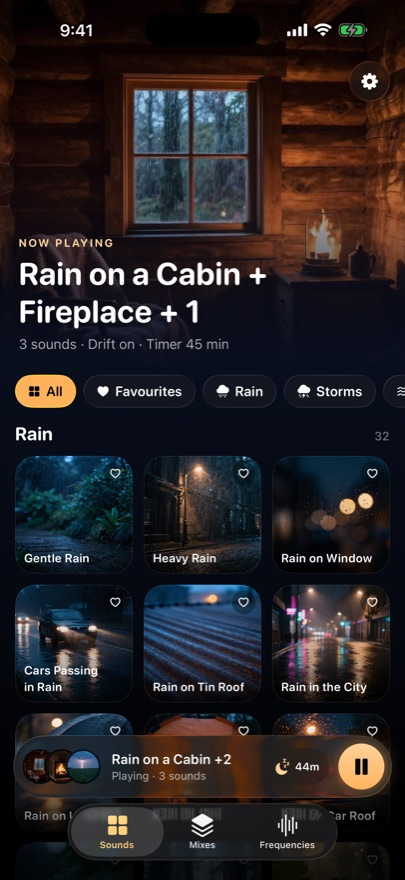
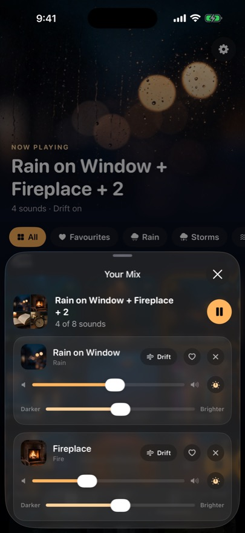
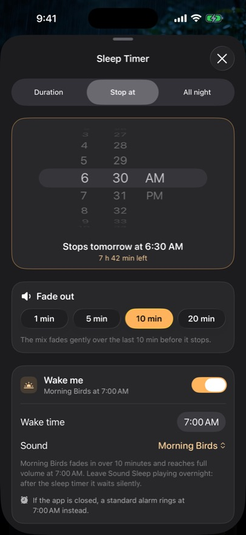
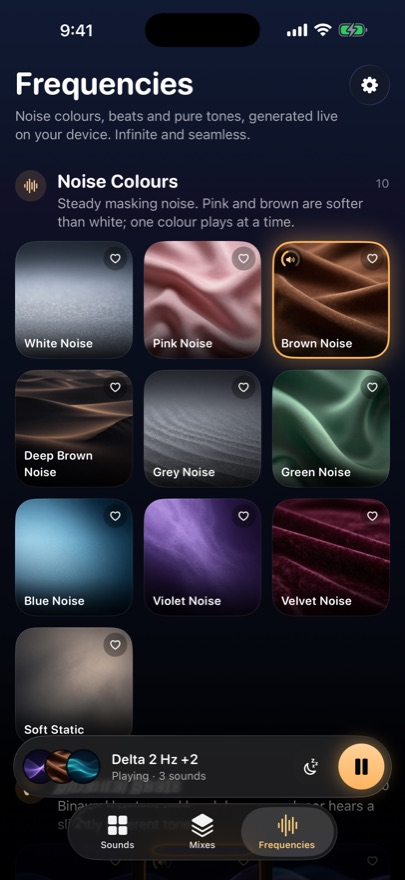

Sleep sounds you pay for once.
250+ seamless sleep sounds and a mixer for up to 8 layers that plays all night, fully offline. Pay once: no subscription, no account, no data collected, no ads.
$9.99 one-time · no subscriptionDownload on the App Store




What Sound Sleep does
- 250+ seamless sounds: rain, thunderstorms, ocean, wind, fire, forest, fans, city, ASMR, baby, melodies, space
- Mix up to 8 sounds, each with its own volume and warmth
- Drift keeps a mix alive by slowly moving each sound
- 20 curated mixes plus Sleep Journeys that change as you drift off
- White, pink and brown noise, binaural beats, isochronic tones, solfeggio frequencies like 528 Hz
- Sleep timer with soft fade-out, or stop at a set time
- Wake me: your sound fades in over 10 minutes, with a backup alarm
- Bedside mode, Volume Boost, Nursery and Tinnitus Relief mixes, plays with the screen locked
White, pink or brown noise: which helps you sleep?
- White noise. Every frequency at equal power. Bright and hissy, like TV static. It is the best at drowning out voices, snoring and sharp sounds.
- Pink noise. Softer at the top end, like steady rain. Many people find it gentler than white noise for a whole night.
- Brown noise. Deep and rumbly, like a waterfall or a plane cabin. Popular with light sleepers and people with tinnitus.
- Rain, ocean and fans. Nature sounds and fans mask noise in a similar way and feel less clinical if pure noise feels harsh.
- Mix them. Layer brown noise under rain, set each volume, and let a sleep timer fade it out after you drift off.
Pricing
27 sounds free forever, including white, pink and brown noise, rain, ocean and a piano lullaby. Unlock Everything $9.99 once. Big sleep apps charge up to $79.99 a year.
Big sleep apps charge up to $79.99 a year. Sound Sleep is $9.99 once.
Privacy
No data collected: nothing you do leaves your device. No account, no ads, no tracking, works fully offline. No account, no ads, no data collected.
Who it's for
Light sleepers, people with insomnia, new parents with babies, people with tinnitus, students who focus with noise, ASMR and rain-sound lovers.
Questions
Is Sound Sleep a subscription?
No. 27 sounds are free forever, including white, pink and brown noise, rain, ocean and a piano lullaby. Unlock Everything is a single $9.99 purchase for every sound, mix, frequency and Sleep Journey, including sounds added later. Nothing renews.
Does it work offline and with the screen locked?
Yes. Every sound is on your iPhone, so it plays all night with no internet, with the screen locked, and can even play alongside music or podcasts.
Can I mix sounds together?
Yes. Layer up to 8 sounds, each with its own volume and warmth, save your own mixes, or start from 20 curated mixes and Sleep Journeys that change as you drift off.
Does Sound Sleep have brown noise and binaural beats?
Yes. White, pink and brown noise are generated live, plus binaural beats, isochronic tones and solfeggio frequencies such as 528 Hz.
Does it collect my data?
No. There is no account, no ads and no tracking. Nothing you do leaves your device.
Will it wake me up?
Optionally. Wake me fades your chosen sound in over 10 minutes before your wake time, with a backup alarm.
More iPhone apps you pay for once
- Parlo: Offline Translator App for iPhone, No Subscription
- Invoice Once: Invoice & Estimate App for Contractors
- Kept: iPhone Storage Cleaner & Duplicate Photo Remover
- SignaturePro: Sign PDFs on iPhone, No Subscription